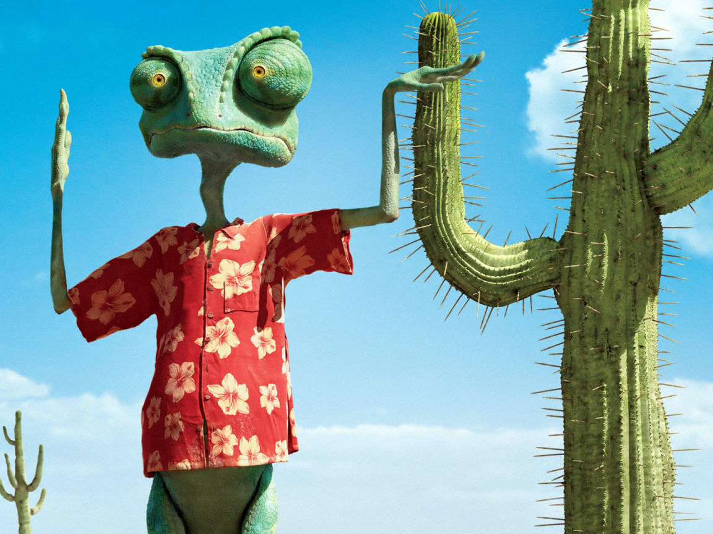

CSS Box Model
Chameleons are my spirit animal
There are over 70 different types of Chameleons in this world. My favorite type of chameleon is a panther chameleon, otherwise know by it's scientific name: Furcifer pardalis
These species can be found in northern and eastern parts of Madagascar, in a tropical forest biome. Chameleons maintain a insectivore diet to help them grow.
On average, a chameleon can live between 1-5 years. Panther Chameleons can change a wide range of colors using camoflouge. This helps them scare off predators such as birds or other chameleons.
Chameleons are mostly active during the day, and spend their time foraging for bugs and climbing branches. A chameleon's tongue is often longer than its body.
The tongue is covered in mucous and makes for a sticky trap for any insect. When a chameleon extends their tongue, they can hit prey within 0.00003 seconds with exact precision.
Learn more about chameleons here.
Different Types of Chameleons
- Panther
- Veiled
- Dwarf
- Jeweled
| Type of Chameleon: |
Native Habitat |
Chameleon Color |
| Panther:Furcifer pardalis |
Rainforest |
Blue, Red, Green, yellow, pink |
| Veiled:Chamaeleo calyptratus |
Rainforest |
Blue Green, yellow |
| Dwarf:Bradypodion pumilum |
Rainforest |
Green |
| Jeweled:Furcifer campani |
Rainforest |
Green with blue and black spots |

Rango is the best movie
My favorite movie that has a chameleon in it is, Rango. It's about a chameleon that is trapped in a desolate town, where he becomes sherrif of the city.
I think this is the best display of a chameleon and I really admired the animations of the chameleon. I loved this movie so much that I bought a bearded dragon and named him rango.
If you ever wanted to watch the movie, it is listed on Netflix.

{kind=link}